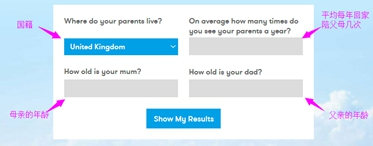

在你未成年之前，父母整整陪了你18年；当你22岁后（父母50岁左右），到外地工作，如果一年内只能回家7天，在父母80岁之前，你只能陪他们210天，甚至不到一年。 当你刚学会说话时，他们一整天都在教你说话，不厌其烦；而你现在每周给父母打一次电话，一次20分钟，一年下来，你也只能陪他们聊520分钟，连9个小时都不到。 调查显示，网友3013年陪父母的时间：34%每年大于30天；20%每年不足30天；24%每年不足10天；22%每年不足7天。
不管多晚，老爸也要等你回来再吃。加班要提前告诉爸妈，不加班就尽量早点回。漂在外面的，不仅有你，还有爸爸的心。
http://seeyourfolks.com/选择自己的国籍，填写平均每年回家看望父母的次数、母亲的年龄、父亲的年龄之后，点击“Show My Results”，即能查看你还能见到双亲多少，这将是最震撼心灵的一个数字。
